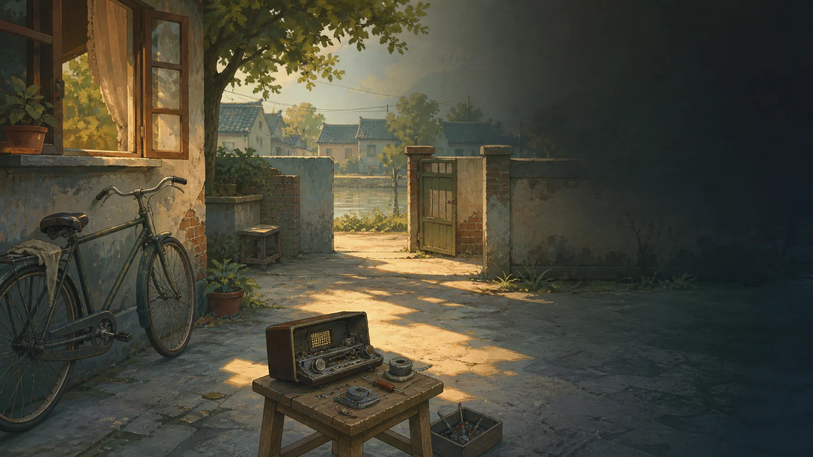

人生回顾0 分
最强能力—
人生事件0 个事件
生活安排0 次安排
现金流0 元
配乐由你主动开启；关闭后所有文字反馈仍保留。
长河流域 · 1998 年夏
在这座小镇长大、谋生、与人同行。每一世的选择，会变成下一世手里的工具、笔记和书信。
一世约 10—20 分钟。做成几件具体的事，也给后来的人留下一条路。
推荐身份、天赋与属性已备好；进入后仍可改变发展方向。
长河每年涨一次水。桥的另一边是学校、集市和车站，桥的这一边有修理铺、旧电影院和你还没见过的人。这里没有被安排好的英雄，只有一些会在多年后回到你身上的小事。
推荐构筑会分配天赋与属性。展开下方四项，仍可自由调整。

机会不消耗生活行动点，但会改变资源、路线和后面的事件条件。
每个成长节点有 2 点生活行动。先押注最重要的一件事，再决定要不要给自己留余地。
人生档案已封存
遗产不是收藏品。每一件都会改变下一世的开局、行动或小镇状态。
回声镇 · 记忆总览
你会看见自己走过的路线、收集的基础、尚未听见的彩蛋，以及这座镇子如何被一代代人改变。